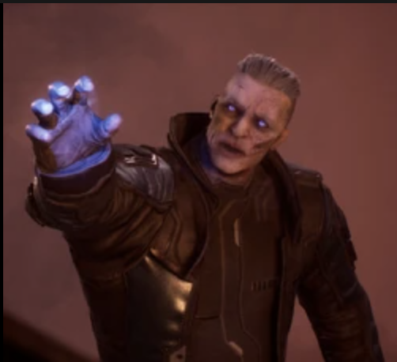
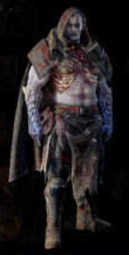
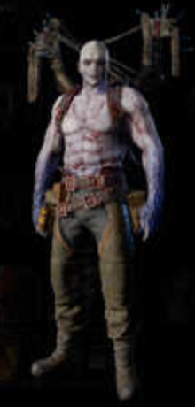

The Altered are humans that have been transformed by the Anomaly Storm, giving them power over elemental and physical forces.
After the Outriders discovered the anomaly on Enoch, it let forth a storm that forced The Player back into cryosleep for 30 years.When they finally awoke, the world had changed and so had they.
Altered are humans that have been transformed into god-like beings, capable of deciding the outcome of battles. Their powers are inextricably linked to the Anomaly, though it is unknown to what extent. While they are not immune to the Anomaly's effects, they are far more resilient.They possess supernatural strength, are capable of rapid healing, and even appear able to survive lethal injuries. These qualities have raised them to the status of living gods in many peoples eyes, and even worshipped by many and answer to no one.
Seth
Seth is one of the few Altered fighting on the side of the ECA, Seth's massive power is one of the reasons the ECA still survives. But, like the rest of his Altered kin, he is unpredictable, unreliable, and not entirely sane.
Gauss
Gauss is an Altered, appearing as the boss encounter of Solar Tower and is blocking a crucial supply line that supports Rift Town. He is known as the Besieger of Rift Town.
Moloch
Seth first introduced you to Moloch When he shared his vision of the powerful Altered fighting for the Insurgents. He warned you against trying to face him. Moloch's Powers seem to have twisted him into a wretched being, barely recognizable as human. Moloch wields fire with frightening skill. No one else among the ECA seems to know about Moloch or the threat he poses, likely because none of them have survived laying eyes on him. Moloch is the result of being Test Subject 6 of The Alchemist.